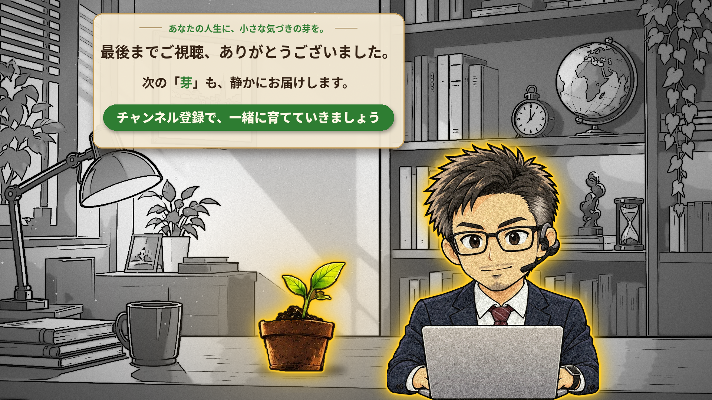
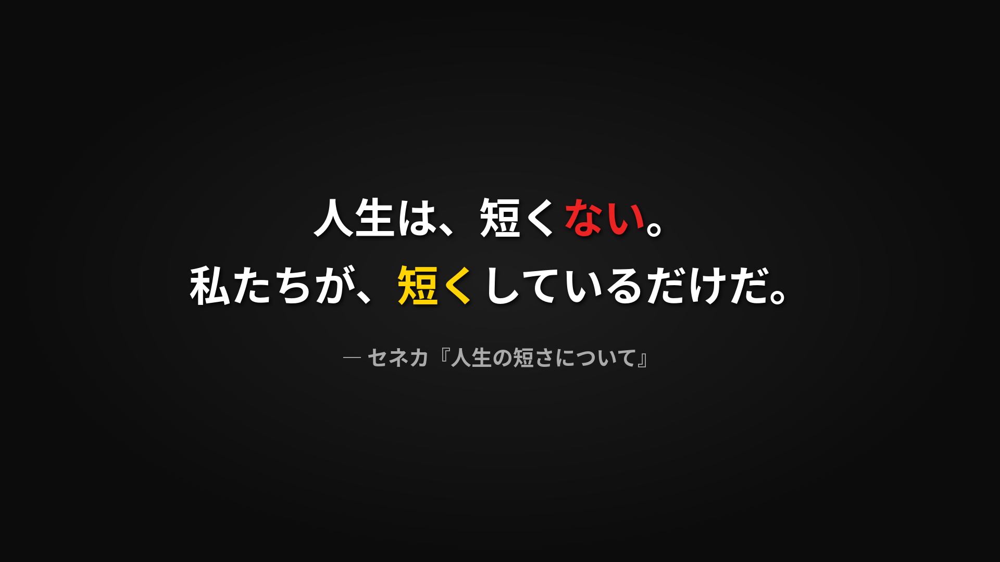
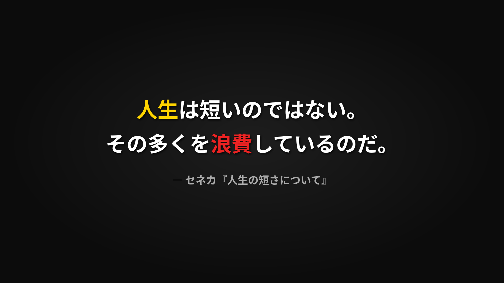
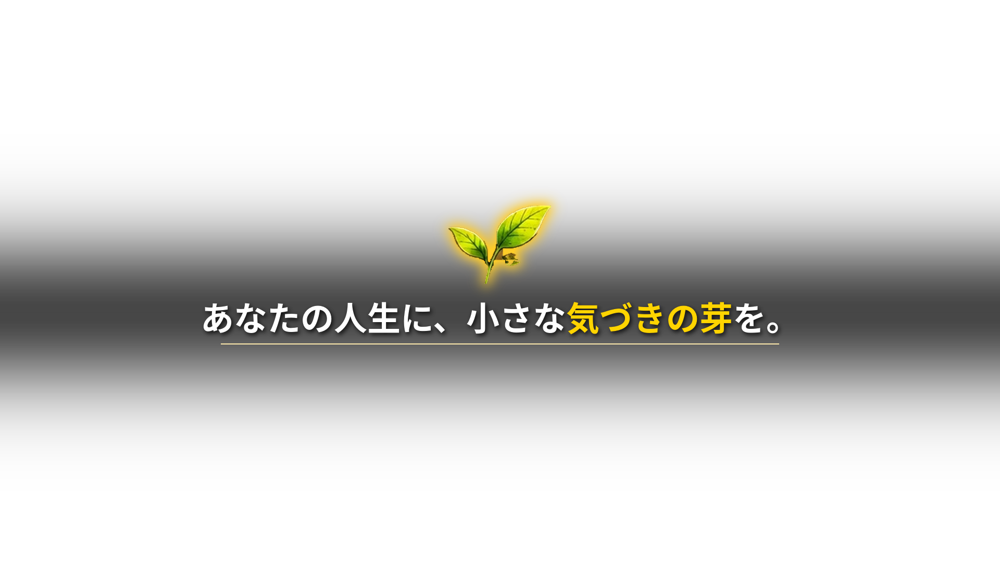

第1話「人生は、短くない。」
仕上げの作業工程
真面目の芽 ／ 2026-09-30 ／ Vrewで仕上げ → 書き出し → アップ
全体の流れ目安 合計2〜2.5時間
| 順 | やること | todo番号 | 目安 |
|---|
| 0 | 素材をそろえる（ep01_parts フォルダ） | 準備 | 5分 |
| 1 | 挿絵フォルダの 32.png を差し替える | ① | 2分 |
| 2 | 「文字」画面2枚の文言をナレと照らし合わせる | ③ | 5分 |
| 3 | Vrewで挿絵を配置リストどおりに置く | ② | 60〜80分 |
| 4 | 冒頭テロップを重ねる | ⑤ | 5分 |
| 5 | 左下にシンのアイコンを重ねる | ④ | 5分 |
| 6 | 書き出して、通しで見る | ⑥ | 20分 |
| 7 | 実際の時間を秘書に送る → 概要欄を直す | ⑦ | 5分 |
| 8 | YouTubeにアップ（サムネ・概要欄） | ⑧ | 15分 |
順番のコツ：32.pngの差し替えと「文字」画面は、Vrewに入れる前にやる。あとで差し替えるより、最初から正しい絵を置いたほうが早い。
0. 素材をそろえる5分
GitHubの company/production/ep01_parts/ から、下の5つをダウンロードして、挿絵（01〜32.png）と同じフォルダに入れる。

32.png：END（シン版）

quote_0028.png：文字画面 0:28

quote_0209.png：文字画面 2:09

opening_theme.png：冒頭テロップ（透過）
shin_icon.png：左下のシン（透過）
- 5つとも挿絵フォルダに入れた
- 配置リスト
majime-no-me-video01-vrew-placement.pdf を横に開いた
1. 32.png を差し替える① ／ 2分
- 挿絵フォルダの古い
32.png を、32_old.png に名前を変えてよける（消さない）
- ダウンロードした
32.png（シン版END）をそこに置く
- 32.png を開いて、書斎＋シン＋芽のENDになっている
2. 「文字」画面を確認する③ ／ 5分
| 時間 | 画像 | 入っている文言 |
|---|
| 0:28 | quote_0028.png | 人生は、短くない。／私たちが、短くしているだけだ。 |
| 2:09 | quote_0209.png | 人生は短いのではない。／その多くを浪費しているのだ。 |
要チェック：この2つは、台本（15分版）の流れから秘書が予想して作ったもの。ナレーションの文言と違っていたら、使う文を秘書に送ってね。すぐ作り直す。
- 0:28 のナレと文言が合っている
- 2:09 のナレと文言が合っている
3. Vrewで挿絵を置く② ／ 60〜80分
- 配置リストの順に、01.png から1枚ずつ入れる（Vrew上のメニュー「挿入 → 画像・動画」から。バージョンでメニュー名が少し違うかも）
- 各画像の表示範囲を、配置リストに書いてあるクリップ（ナレの区切り）に合わせる
- 画面の切り替えはディゾルブ（ふわっと切り替え）で統一
- 画像の動きはゆっくりズームで統一。1枚目で設定を決めたら、あとは同じ設定で置いていく
- 0:28 と 2:09 の位置には、「文字」画面（quote_0028.png／quote_0209.png）を置く
- 最後は 32.png（END）。ENDは5秒以上あると、見る人がチャンネル登録ボタンに気づきやすい
時短のコツ：10枚ごとに一度プレビューして、ずれがないか確認。最後にまとめて見るより、直すところが少なくて済む。
- 01〜32 を全部置いた
- 切り替えは全部ディゾルブ
- ズームの速さがそろっている
4. 冒頭テロップを重ねる⑤ ／ 5分
- タイトル画面（03.png）のあたりに、
opening_theme.png を重ねる画像として入れる（背景が透明なので、下の絵が透けて見える）
- 表示は3〜4秒。フェードイン・フェードアウトで静かに出す
- 「あなたの人生に、小さな気づきの芽を。」が画面の真ん中に読める
5. 左下にシンのアイコン④ ／ 5分
shin_icon.png を重ねる画像として入れる。画面と同じ大きさ（1920×1080）で作ってあるので、位置合わせは不要。全画面に広げるだけで左下に来る- 表示範囲：動画の最初 〜 ENDの直前まで
- ENDでは外す（ENDには大きなシンがいるので、2人になってしまう）
冒頭テロップやタイトル画面とかぶって気になる場合は、そこだけ外してもOK。
- 本編の間ずっと、左下にシンがいる
- ENDにはアイコンが出ていない
6. 書き出して、通しで見る⑥ ／ 20分
- 書き出し：MP4、1920×1080（1080p）
- 書き出した動画を最初から最後まで通しで見る。スマホで見るとYouTubeで見るときの感じに近くなる
- 字幕に誤字・変な区切りがない
- 絵とナレがずれていない（とくに「文字」画面2か所）
- 画面が真っ黒になる瞬間がない
- （BGMを入れているなら）BGMとナレの音量バランスがちょうどいい
- シンのアイコンがENDで消えている
- 動画の長さと、目次の9か所の実際の時間をメモした
7. 概要欄の時間を直す⑦ ／ 5分
メモした時間を秘書に送る → 秘書が ep01_description.md の目次と「9分間」の表記を直す。
| 目次 | 予定 | 実際（メモ） |
|---|
| 気づけば、また一週間 | 0:00 | 0:00 |
| セネカ『人生の短さについて』 | 0:38 | |
| セネカはどんな人？ | 0:51 | |
| 友人パウリヌスへの手紙 | 1:45 | |
| お金は守るのに、時間は配ってしまう | 2:20 | |
| 忙しさに追われる人 | 4:15 | |
| 人生最大の浪費「先延ばし」 | 6:11 | |
| 人生を長くするには | 7:39 | |
| エンディング | 8:56 | |
| 動画の長さ | 約9分 | |
※8分弱に収まったら、概要欄の「静かに考える9分間です」も直す。
8. アップロード⑧ ／ 15分
- タイトル：人生は、短くない。― 2000年前の哲学者セネカの答え
- サムネ：
company/design/thumbnails/2026-09-29_jinsei-mijikakunai.png
- 概要欄：
ep01_description.md の「ここから下をそのままコピペ」の部分（⑦で直したもの）
- サムネが設定されている
- 概要欄の目次が、クリックで正しい場所に飛ぶ
- 公開（または予約）した